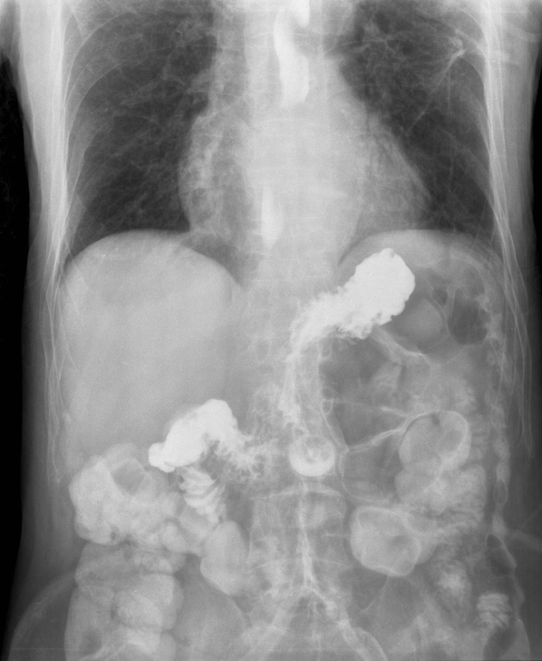
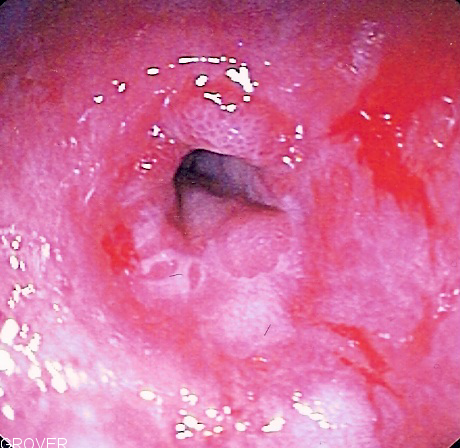

Гастроезофагеальна рефлюксна хвороба
Гастроезофагеальна рефлюксна хвороба (ГЕРХ), або рефлюксна хвороба — це хронічне рецидивуюче захворювання, що проявляється симптомами запалення дистальних відділів стравоходу, та зумовлене порушеннями моторно-евакуаторної функції гастроезофагальної зони, що характеризується спонтаними або регулярно повторюваними закидами шлункового або дуоденального вмісту в стравохід, що призводить до пошкодження дистального відділу стравоходу з розвитком у ньому ерозивно-виразкових, катаральних і функціональних порушень (у тому числі езофагіту, пептичної виразки стравоходу, стравоходу Барретта, а також раку стравоходу).Гастроезофагеальна рефлюксна хвороба є найбільш поширеним захворюванням стравоходу; та характеризується як поліморфізмом клінічних проявів, наявністю як стравохідних, так і позастравохідних симптомів захворювання, довготривалим перебігом та часто стертими клінічними симптомами захворювання (що зумовлює пізнє звернення хворих за медичною допомогою), погіршення перебігу хронічних захворювань (бронхіальної астми, ІХС, цукрового діабету), а також гіпердіагностику хронічних захворювань (ІХС), призводити до розвитку важких ускладнень (пептичної виразки стравоходу, стриктури стравоходу, кровотечі з виразки стравоходу, передракового захворювання — стравоходу Баретта, а також розвитку аденокарциноми стравоходу); а в дітей у важких випадках може призводити до бронхо- та ларингоспазму, розвитку апное і стати причиною раптової смерті.
Зміст
Історія
Згадки про симптомокомплекс, який характерний для гастроезофагеальної рефлюксної хвороби, є ще у наукових працях Авіценни, у яких згадуються такі симптоми як печія та відрижка кислим і гірким. У 1839 році Альберт уперше виділив як самостійне захворювання рефлюкс кислого шлункового вмісту у стравохід, а в 1879 році Квінке вперше описав ерозивно-виразкові зміни в нижніх відділах стравоходу під час трьох патологоанатомічних розтинів як «виразки стравоходу, що спричинені перетравлюванням» та вперше вказав на їх зв'язок із травною дією шлункового соку. У 1906 році Тайлестон підтвердив спостереження Квінке та визначив гастроезофагальний рефлюкс як окреме захворювання, яке він називав «пептична виразка стравоходу». Термін «гастроезофагеальна рефлюксна хвороба» вперше запропонував у 1966 році Росетті. На VI об'єднаному європейському гастроентерологічному тижні в Бірмінгемі було висунуто лозунг: «ХХ століття — століття виразкової хвороби, ХХІ століття — століття ГЕРХ», а частина вчених назвала гастроезофагеальну рефлюксну хворобу «хворобою ХХІ століття» та іноді «хворобою третього тисячоліття». У жовтні 1997 року на міждисциплінарному конгресі в бельгійському місті Генвалі гастроезофагеальну рефлюксну хворобу офіційно визнано самостійною нозологічною одиницею та вперше було прийнято настанову по діагностиці та лікуванню ГЕРХ, заснована на принципі доказової медицини; а у 1999 році ГЕРХ офіційно включена до Міжнародної класифікації хвороб Х перегляду як самостійне захворювання із присвоєнням їй коду МКХ-10 К21 із поділом на ГЕРХ з езофагітом (код К21.0) та ГЕРХ без езофагіту (код К21.9).В Україні статистична реєстрація гастроезофагеальної рефлюксної хвороби почалась з 2009 року.
Епідеміологія
Поширеність гастроезофагеагеальної рефлюксної хвороби у світі залишається стабільно високою, та, за різними оцінками (включно із неерозивною формою захворювання), складає від 20 до 50 % дорослого населення та від 2—4 до 8,7—49 % дитячого населення, причому максимальне поширення захворювання спостерігається в США та Західній Європі (20—40 % дорослого населення мають симптоми печії та ерозивного езофагіту, щоденно відчувають печію до 30 % осіб, а щомісячно близько 50 % осіб) (у країнах Східної Європи, за деякими оцінками, цей показник може сягати 60 %), а найменше в азійських країнах — Китаї (близько 2,5 % населення) та Кореї (близько 3,5 % населення). В Японії ендоскопічно позитивна ГЕРХ виявляється у 16,5 % населення. У Росії, за різними оцінками, поширеність ГЕРХ складає від 40 до 60 % населення (так, у Новосибірську, симптоми печії відчувають 61,7 % чоловіків і 63,6 % жінок, у Москві поширеність ГЕРХ оцінюють у 23,6 % дорослого населення). В Україні поширеність печії серед дорослого населення становить за деякими клінічними дослідженнями 30 %, офіційна кількість зареєстрованих хворих складає 10 на 1000 населення, вірогідних даних за поширення ГЕРХ у дітей в Україні немає.
Етіологія і патогенез
Основним етіологічним чинником розвитку гастроезофагеальної рефлюксної хвороби є порушення моторики верхніх відділів шлунково-кишкового тракту, а насамперед із розслабленням нижнього сфінктера стравоходу. Гастроезофагеальний рефлюкс може бути нормальним фізіологічним явищем, коли він є короткочасним, не супроводжується неприємними відчуттями, та коли його частота не перевищує 50 випадків на добу або 4,2 % тривалості часу спостереження рефлюксу, а тривалість не перевищує 20 секунд.Фізіологічний гастроезофагеальний рефлюкс спрямований на звільнення шлунку від надлишку повітря, їжі або рідини. Гастроезофагеальну рефлюксну хворобу поділяють також на первинну, пов'язану з первинним порушенням замикальної функції нижнього сфінктера стравоходу (переважно пов'язаним із зниженням чутливості сфінктера до пресорних речовин або невідомої етіології); та вторинну, який виникає на фоні інших патологічних процесів (хімічного впливу, деструктуризації сфінктера, пов'язаного із захворюваннями, прийомом медикаментів, оперативним втручанням та іншими причинами).
До факторів, які є безпосередніми причинами ГЕРХ, та сприяють розвитку її нових симптомів, відносяться:
- Ковзна кила стравохідного отвору діафрагми;
- Стани, пов'язані з підвищенням внутрішньочеревного тиску (вагітність, ожиріння, підвищений метеоризм, використання корсетів та бандажів), у тому числі великі кисти та пухлини черевної порожнини та позаочеревинного простору;
- Порушення кліренсу стравоходу;
- Порушення випорожнення шлунку та патологія гастродуоденальної зони (виразкова хвороба, дуодено-гастральний рефлюкс, дуоденостаз), жовчнокам'яна хвороба;
- Пошкоджуюча дія рефлюктату (вмісту шлунку або дванадцятипалої кишки), який закидається у стравохід;
- Нераціональне харчування: споживання гострої та жирної їжі, цитрусових, томатів, швидке споживання їжі та переїдання; зловживання алкогольними та газованими напоями; зловживання палінням;
- Інтенсивні фізичні навантаження;
Згідно даних клінічних досліджень, сприятливим фактором розвитку гастроезофагеальної рефлюксної хвороби є жіноча стать, а також похилий вік. У дитячому віці найчастішими факторами розвитку ГЕРХ за даними клінічних досліджень є спадкова схильність, патологічний перебіг вагітності, від якої народилась дитина, раннє штучне вигодовування, наявність у дитини неврологічної симптоматики протягом першого року життя, порушення режиму харчування, недиференційована дисплазія сполучної тканини, а також паразитарна інвазія. За даними частини клінічних дсліджень, також може сприяти виникненню ГЕРХ як у дорослих, так і у дітей, наявність інфекції Helicobacter pylori, хоча значна частина дослідників не підтверджує цей факт.
Класифікація
Загальноприйнятої класифікації гастроезофагеальної рефлюксної хвороби не існує. Гастроезофагеальну рефлюксну хворобу по причинах її виникнення поділяють на первинну ГЕРХ та вторинну. Ендоскопічно гастроезофагеальна рефлюксна хвороба поділяється на ГЕРХ без езофагіту (або ендоскопічно негативну) та ГЕРХ із езофагітом (або ендоскопічно позитивну). По вираженості ендоскопічних змін ГЕРХ із езофагітом поділяють згідно Лос-Анджелеської ендоскопічної класифікації езофагіту, затвердженої в 1994 році
- Ступінь А — дефект слизової оболонки (один чи більше) розміром менше ніж 5 мм, обмежений однією складкою слизової оболонки стравоходу;
- Ступінь В — дефекти слизової оболонки розміром понад 5 мм, які не виходять за межі 2 складок;
- Ступінь С — дефекти слизової оболонки, які виходять за межі двох складок, але захоплюють менше ніж 75 % окружності стравоходу;
- Ступінь D — дефекти слизової оболонки, які захоплюють 75 % і більше окружності стравоходу.
У класифікацію гастроезофагеальної рефлюксної хвороби також включаються ускладнення ГЕРХ, до яких відносять стравохідну кровотечу, перфорацію стравоходу, метаплазію слизової оболонки (стравохід Баррета), медіастиніт, непрохідність стравоходу, виразка стравоходу.
Використовується також ендоскопічна класифікація езофагіту по ступені важкості по Savary-Miller
- І ступінь — окремі ерозії, які не зливаються і/або еритема дистального відділу стравоходу;
- ІІ ступінь — зливні, але такі, що не охоплюють більшу частину слизової оболонки, ерозії;
- ІІІ ступінь — ерозивні ураження нижньої третини стравоходу, які зливаються та охоплюють усю поверхню слизової оболонки стравоходу;
- IV ступінь — хронічна виразка стравоходу, циліндрична (шлункова або кишкова) метаплазія слизової оболонки стравоходу (стравохід Барретта).
Клінічна симптоматика
Клінічні прояви гастроезофагеальної рефлюксної хвороби може включати в себе як стравохідні, так і позастравохідні симптоми (які іноді називаються атиповими симптомами). Серед типових стравохідних симптомів ГЕРХ найпоширенішим є печія. За деякими оцінками, вона спостерігається у 83 % хворих ГЕРХ. Серед пацієнтів з ревматологічними захворюваннями, особливо тих, що постійно приймають нестероїдні протизапальні препарати, печія спостерігається у 50 % випадків (щоправда, у більшості випадків після дообстеження встановлюється наявність виключно функціональної печії без ознак езофагіту).Печія у хворих ГЕРХ повторюється регулярно, і її частота складає не рідше 2 разів на тиждень, з'являється та посилюється печія переважно через 1—1,5 години після їжі або вночі, посилюється при нахилах тулуба, при вживанні алкогольних напоїв і курінні тютюну, та зменшується після вживання антацидів або їжі з лужною реакцією.Іншим характерним симтомом ГЕРХ є відрижка (або регургітація), яка може бути як повітрям, так і їжею; як кислим, так і гірким. Більш характерною для ГЕРХ є відрижка кислим, але може також спостерігатись відрижка повітрям та аерофагія. Регургітація, особливо у дітей, може супроводжуватися гіперсалівацією.Часто (за деякими оцінками до 65 % хворих) спостерігаються скарги на біль за грудиною з іррадіацією в міжлопаткову область, шию, нижню щелепу, ліву половину грудної клітки. Біль за грудиною при ГЕРХ виникає або посилюється в положенні лежачи, і не знімається прийомом нітратів, чим відрізняється від болю при стенокардії.При ГЕРХ також може спостерігатись відчуття тиснення за грудиною в ділянці її нижньої третини, солоний або мильний присмак у роті, метеоризм, нудота і блювання. При ГЕРХ може спостерігатися також одинофагія (болючість при проходженні їжі по стравоходу). Рідше при гастроезофагеальній рефлюксній хворобі спостерігається дисфагія, яка може свідчити про важкий та ускладнений перебіг хвороби, гикавка, відчуття клубка в горлі, біль у щелепах, гіркота в роті, жовтий наліт на язиці. Позастравохідні симптоми гастроезофагеальної рефлюксної хвороби є досить різноманітними, та особливо часто зустрічаються у хворих літнього віку із збільшенням частоти розвитку факторів ризику ГЕРХ, а також на фоні розвитку супутньої патології, для лікування якої застосовуються лікарські препарати, які підвищують ризик гастроезофагеального рефлюксу.Позастравохідні симптоми ГЕРХ більшість авторів досліджень поділяють на 4 так звані «позастравохідні маски» захворювання: отоларингологічну, кардіологічну, бронхолегеневу та стоматологічну.
Діагностика
Натепер не існує обстеження, яке б рахувалось «золотим стандартом» діагностики гастроезофагеальної рефлюксної хвороби. У минулому таким обстеженням вважався добовий рН-моніторинг стравоходу, який полягає у введенні в дистальні відділи стравоходу рН-зонда та його фіксації в цій ділянці на тривалий час (найефективніше — не менше ніж 24 години), що дозволяє виявити кількість та тривалість патологічних рефлюксів, коефіцієнт закислення стравоходу (співвідношення часу, при якому рН стравоходу знаходиться на рівні 4,0 і нижче, до загального часу дослідження, виражене у процентах) та час тривалості закислення.Проте у деяких хворих із задокументованою печією добовий моніторинг рН стравоходу не виявляє відхилень від норми. Причиною цього часто може бути закиди слабокислого, лужного рефлюктату, або газові рефлюкси. Для удосконалення дослідження інтраезофагеальної рН застосовуються нові методи її моніторингу, зокрема імпеданс-рН-метрія та застосування радіокапсули «Bravo». При ймовірності рефлюксу жовчі у стравохід застосовується також метод внутрішньостравохідної біліметрії, який допомагає виявленню у складі рефлюктату білірубіну.Одним із найважливіших методів діагностики гастроезофагеальної рефлюксної хвороби залишається ендоскопічний метод. Хоча й у більшості хворих, що мають скарги на печію, чи інші симптоми, які характерні для ГЕРХ, при ендоскопічному дослідженні не виявляють патологічних змін слизової оболонки стравоходу, ендоскопічне дослідження навіть у випадку ендоскопічно негативної форми захворювання дозволяє краще оцінити тактику і тривалість лікування хворих.При наявності у хворих симптомів дисфагії, одинофагії, болю за грудиною, похудання, анемії, блювання, зниження апетиту, наявності або підозри на утворення об'ємного утвору, іншій атиповій симптоматиці; а також при неефективності лікування, хворим після 40 років та при передопераційній підготовці ендоскопічне обстеження стравоходу є обов'язковим.Для більш точної діагностики структурних особливостей ураження слизових оболонок при ГЕРХ застосовується також метод хромоендоскопії. Цей метод застосовується у випадку підозри на виникнення у хворого стравоходу Барретта або раку стравоходу, і полягає у розпиленні у стравоході барвників, найчастіше метиленового синього або розчину Люголя. Забарвлення нормального епітелію стравоходу даними барвниками відрізняється від забарвлення метаплазованого епітелію та епітелію ерозій, езофагіту та пухлин стравоходу.Для уточнення результатів ендоскопічного дослідження при ЕГДС одночасно проводиться також гістологічне дослідження слизової оболонки стравоходу.
Лікування
Лікування хворих гастроезофагеальною рефлюксною хворобою повинно бути комплексним та тривалим, і включати модифікацію способу життя, медикаментозну терапію, дієтотерапію та за необхідності оперативне лікування. Модифікація способу життя у хворих на ГЕРХ включає у першу чергу зниження маси тіла та уникнення переїдання, рекомендовано 4—5 разове харчування невеликими порціями. Хворим не рекомендовано їсти перед сном, а після прийому їжі не рекомендовано протягом 1 години лежати та нахилятися. Хворим не рекомендовано піднімати більше 8—10 кілограмів, не носити тугих поясів, бандажів, корсетів та тісного одягу. Для зменшення вираженості рефлюксу хворим рекомендовано спати із піднятим підголовником ліжка на 15 сантиметрів, причому піднятою повинна бути вся верхня половина тіла, оскільки піднімання лише голови призводить до підвищення тиску в черевній порожнині, та внаслідок цього — до збільшення рефлюксу.У дієтичному харчуванні хворих на ГЕРХ велике значення має як склад їжі, так і режим харчування та спосіб кулінарної обробки їжі. Хворим ГЕРХ не рекомендується вживання їжі, багатої органічними кислотами, грубою клітковиною, тугоплавкими жирами, копчену, солону та смажену їжу, газовані напої, кислі соки, шоколад, каву, цибулю, часник, пиво, вино (особливо шампанське та інші ігристі вина), житній хліб. Дозволяється вживання вареної або тушкованої їжі (без соусів та спецій). Для покращення репаративних процесів у слизовій оболонці стравоходу рекомендовано збільшити у раціоні вміст продуктів із вітамінами А та Е, каротиноїдами, лецитином, омега-3 ненасиченими жирними кислотами. Не рекомендовано вживання холодних або дуже гарячих страв. При важких формах ГЕРХ рекомендовано вживання виключно протертих страв невеликими порціями та виключення із раціону будь-яких продуктів, які стимулюють шлункову секрецію.У медикаментозній терапії ГЕРХ провідне місце посідають інгібітори протонної помпи. Згідно зі Гштадськими рекомендаціями з лікування ГЕРХ від 2008 року усім хворим ГЕРХ рекомендується прийом інгібіторів протонної помпи на термін, залежний від ступеню ураження стравоходу. У випадку встановлення діагнозу неерозивної форми ГЕРХ та езофагіту ступеня А і В хворим рекомендовано прийом інгібіторів протонної помпи у стандартній дозі терміном від 4 до 8 тижнів, при виявленні езофагіту ступеня С або D рекомендовано прийом інгібіторів протонної помпи терміном не менше 8 тижнів, із подальшим переходом до підтримуючої терапії згідно тактики «step-down», або «крок униз» (тобто із поступовим зменшенням дози препаратів до підтримуючої дози) строком до 3—6 місяців. У випадку легших форм захворювання хворим рекомендовано застосування інгібіторів протонної помпи на вимогу, тобто виключно при появі скарг — печії або інших симптомів ГЕРХ.У лікуванні ГЕРХ застосовують переважно 5 препаратів з групи інгібіторів протонної помпи — омепразол, лансопразол, пантопразол, рабепразол, езомепразол; із 2009 року для лікування ГЕРХ застосовується також оптичний ізомер лансопразолу декслансопразол.